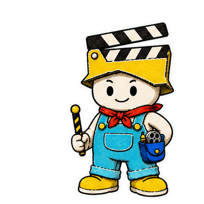
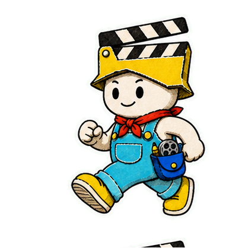
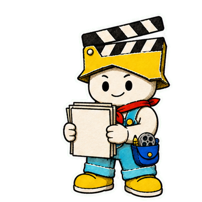
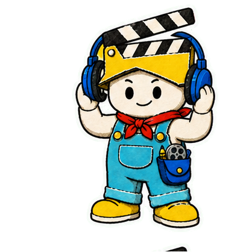
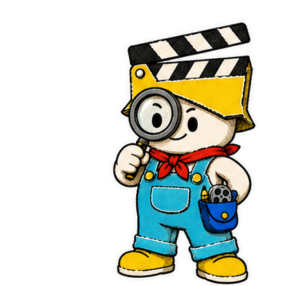

先讲结果，需要时再解释术语。
这条宣传片，是它自己做的
说清你想做什么拿到能发布的视频
它会先问清楚发给谁、发到哪、讲多久，再帮你写脚本、做分镜、配声音、排字幕，最后把完整视频和可编辑素材一起交给你。
本页成片实测：半天完成 · 4+ 轮对话 · 9 段可拆

 Codex
Codex Claude Code
Claude Code Trae
Trae Gemini CLI
Gemini CLI Kimi Code
Kimi Code MiniMaxWorkBuddy
MiniMaxWorkBuddy Manus
Manus完整成片
这套 Skill 到底能做什么，看完就知道
下面这条视频就是它从一句需求开始做出来的。默认静音，想听配音和音效时再打开声音。
视频暂时无法加载。可以先去 GitHub 查看项目。
这条介绍自己的视频，从策划、配音、剪辑、检查到交付，都由同一套 Skill 完成。
开始前先问三个问题
发给谁，发到哪，准备讲多久
同一个想法，发小红书、抖音和 B 站，开头、信息量和节奏都不一样。
保留方法、证据和有用参数。
更快进入重点，每个镜头只做一件事。
留出空间，把背景、证据和完整过程讲清楚。

四份工作文档
四份文档，把一句想法变成能执行的方案
先把思路讲清楚，再花时间铺完整条片。
目标简报
这条片给谁看，要让人记住什么。
分镜表
每个镜头出现什么，旁白说到哪里。
视觉规范
颜色、字体、动效和吉祥物怎么动。
独立小样
先把最难的镜头做出来，满意后再铺开。

让声音贴合画面
选声音，配旁白，加音乐，再把字幕跟准
Skill 已经接入 ElevenLabs 和火山引擎。它能试听不同音色，生成旁白、背景音乐和动作音效，再让字幕跟着真实口播走。声音不合适可以换，音乐太小或太抢也可以直接调。
ElevenLabs火山引擎
- 01 · 试听
先比较多个音色，再决定最终旁白。
- 02 · 配音
按确定的文案和自然语速生成口播。
- 03 · 配乐
用音乐和小音效托住动作，不盖住人声。
- 04 · 对齐
按照真实口播时间放置完整字幕。

查看接入细节
密钥只从系统钥匙串或环境变量读取。供应商配置、时间戳、声音复刻授权和最终声音复测都有明确检查，不会把凭据写进仓库。
视觉风格
先选一种，也可以加自己的
波普艺术适合节奏快、颜色亮的宣传片；手撕纸适合更温和、更有质感的故事。每套模板都会约束配色、字体和动作方式，避免每个镜头各长各的。
要醒目就大胆一点快切 · 亮色 · 大字
这套模板如何保持一致
统一少量配色、粗体排版、硬朗动作、信息密度和文字安全区。也可以单独加入新模板，不必推翻整条工作流。
一个想法慢慢成形刚性纸片 · 定格动作 · 温暖质感
这套模板如何保持一致
统一撕边、纸张纹理、平面层级、克制配色和离散定格。纸片只做平移、旋转和等比缩放，不弯曲、不融化、不漂移。
交付前再检查
从头看一遍，再从头听一遍
字幕有没有少字，手机外放能不能听清，转场有没有爆音，文件还能不能继续剪。都过了，再交付。
不截断句子，也不漏字。
音乐听得到，但不会盖住人声。
没有爆音、闪屏或意外空档。
交付成片、章节、音频分轨和字幕。

常见问题
开始之前，大家最常问这些
我不会剪辑，也能用吗？
可以。先说清受众、平台、时长、素材和想要的结果，Skill 会把它们变成可以逐步确认的文档和小样。
可以带自己的图片、录屏和已有视频吗？
可以。真实产品画面和你提供的素材可以成为主角，不会被一堆装饰动效盖住。
声音和画风不喜欢，能换吗？
可以。定稿前能换音色、调音乐、改音效、切模板，也能加入自己的风格。
做完以后还能继续修改吗？
可以。交付内容可以包括完整视频、独立章节、旁白、音乐、音效、字幕和合成工程。
支持哪些 AI 工具？
Codex、Claude Code、Trae、Gemini CLI、Kimi Code、MiniMax、WorkBuddy、Manus，以及其他能加载 Agent Skills 或仓库指令的工具。
使用 ElevenLabs 或火山引擎需要额外费用吗？
Skill 本身开源。音频生成费用取决于你接入的账号和套餐，付费生成前会先做短样试听。
MIT · 开源
把它装进你常用的 AI 工具
复制命令，重启工具，再告诉它你想做什么视频。
- 复制全局安装命令。
- 重启 Codex、Claude Code、Trae、WorkBuddy、Manus 或其他兼容工具。
- 告诉它受众、平台、时长、素材和视觉方向。